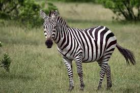
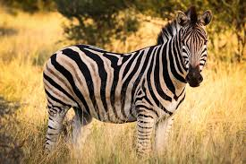

Zebra
As zebras são mamíferos herbívoros nativos das savanas e planícies da África. Elas são conhecidas por suas listras únicas em preto e branco, que ajudam na camuflagem e proteção contra predadores. Existem três espécies principais: a zebra-da-planície, a zebra-de-grevy e a zebra-das-montanhas, cada uma adaptada a diferentes habitats, desde pradarias abertas até áreas mais montanhosas.
As zebras se alimentam principalmente de capim, mas também podem comer folhas e brotos. Vivem em grupos e são animais sociais, com um forte senso de proteção mútua. Além disso, suas listras funcionam como uma "impressão digital", sendo únicas para cada indivíduo.
